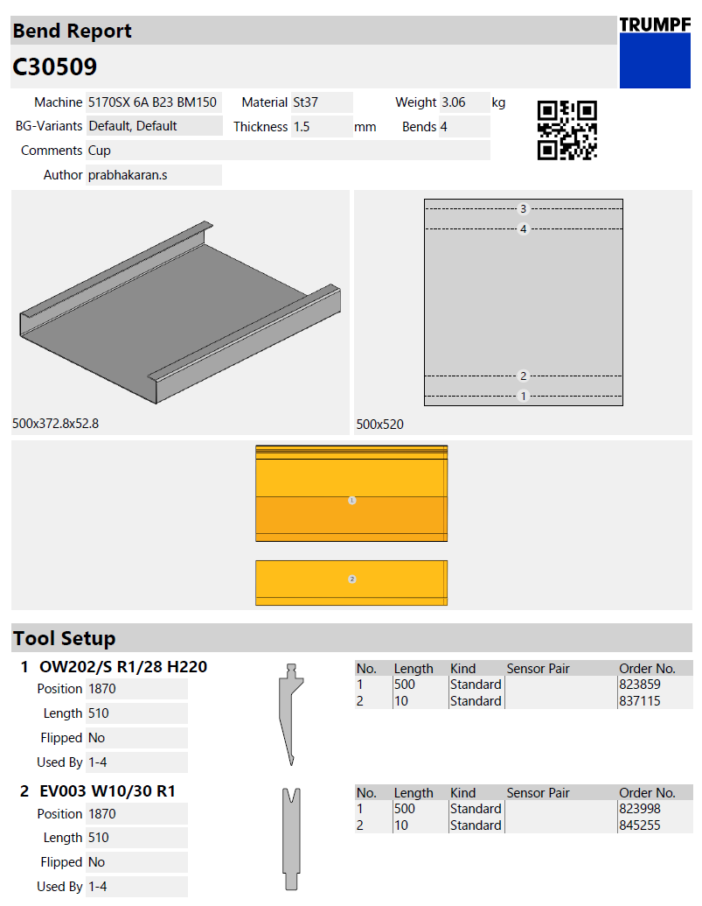
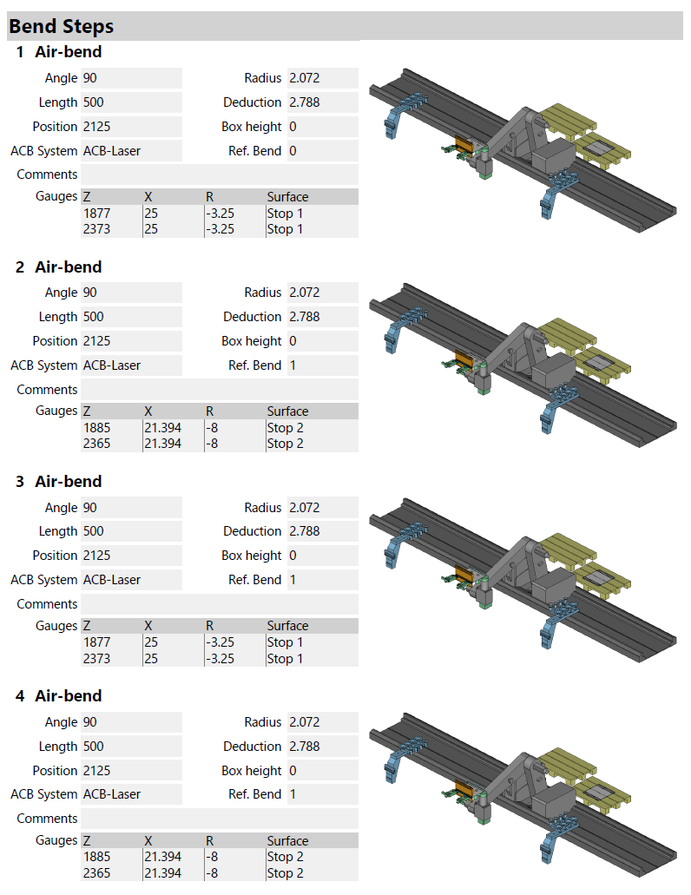
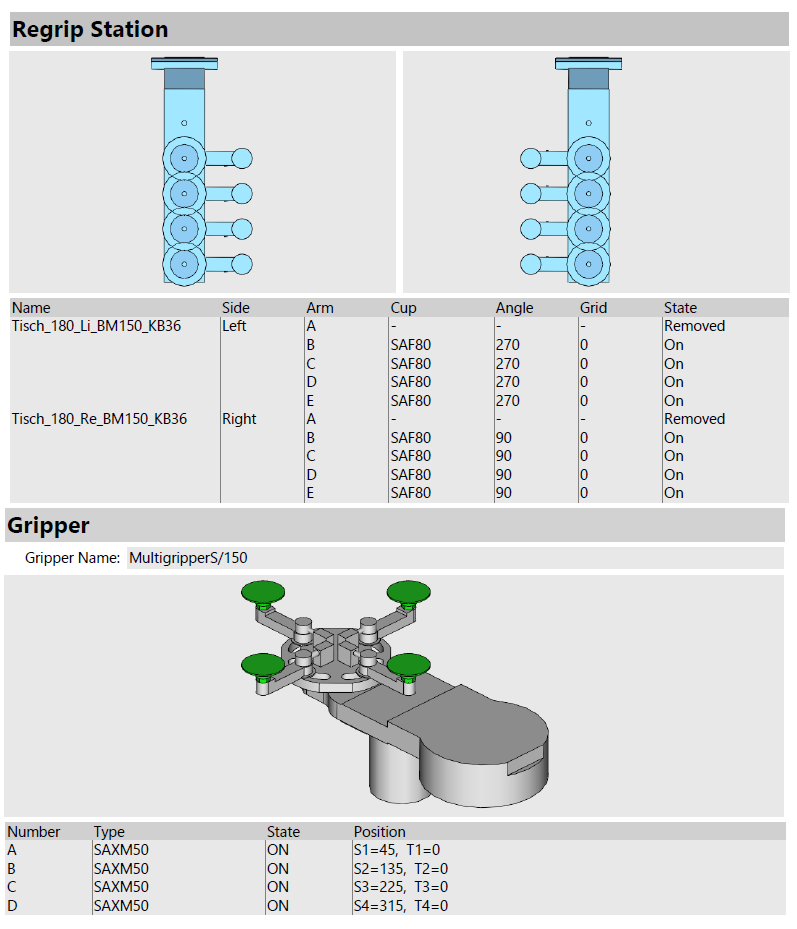
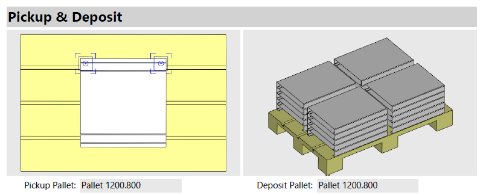

Basic Steps of Robotic Bending
We will discuss the basic steps in processing parts inside Robotic Bending machine.
STEP 1 - Switching to 3D Mode
-
If you have a part created in drawing mode using sketch option, you can view the part as shown below:
-
You can shift from the sketch mode to 3D mode by selecting the Workflow option.
-
Click on the workflow icon in the command bar on the left.
-
-
If you have a 3-D sheet metal model open, you can switch to Bend CAM using the Workflow panel. Here is one way you could switch to the Bending mode.
-
Click on the workflow icon in the command bar on the left.
STEP 2 - Switching to Bend Tech
-
Use the Bend Tech option to select the machine to be used to process the Bend
-
Click on the Bend Tech option in the workflow panel.
-
Click the close button to close the workflow panel.
Here is a faster way to do this, using the keyboard.
-
Press W to open the workflow panel.
-
Press B to switch to the Bend Tech mode.
-
Press Esc to close the workflow panel.
An even faster method can be used if you simply want to use the default Bending machine (the same one that was used the last time).
-
Open a part.
-
Press B to switch to the Bending mode.
STEP 3 - Expanding Bend Navigator
Hover over Bend navigator to see the simulation controls pops down.
-
The slider can be used to move the current bend through various phases of the bending operation (Part Pickup, insert part for bending, retract back-gauges move punch to pinch point, press with beam to bending position, Retract part, Regrip for better part handling, Deposit part etc). As the slider is moved, the tool-tip displays the current phase of bending, and various parts of the machine move in the simulation. If there are any collisions, those parts are colored red to clearly highlight the collision.
-
The play controls near the left can be used to start the simulation, stop it, or rewind to the beginning.
| You can also press the Spacebar to start or stop playing the Bend simulation. |
-
The dropdown arrow can be used to expand the Bend navigator, displaying more detailed information about the errors and warnings for various bends.
| You can also press the Z key to expand/collapse the bend navigator display. |
| Description | Meaning |
|---|---|
P |
Pickup |
1 |
Bend 1 |
2 |
Bend 2 |
R1 |
Regrip |
D1 |
Deposit 1 |
D2 |
Deposit 2 |
STEP 4 - Recompute Bend Solution
When you press B, or use the workflow panel to compute a solution, Flux RoboBend calculates a bend solution using a set of default settings and parameters.
#If you find No Errors in this image #after applying the Bend tooling, you can proceed to generate NC and Reports.
If you have any error, you can use do a re-calculation of this solution using different settings by clicking on the recompute button on the command bar. Sometimes, this is also useful to complete the computation after you have interactively edited some tooling, or the sequence.
-
You can change the sequence and compute new tooling stations while keeping the sequence unchanged.
-
You could change the tooling stations to compute a new sequence, or to align the part to the newly created stations.
-
You can try the tooling operation with a different set of tools, or try using an already-created Setup.
STEP 5 - Generating NC Code and Reports
-
Click on the workflow icon in the command bar on the left.
-
Click on the Bend Tech process node in the workflow panel.
-
Click on the Post-process option(see the highlight in the image).
| The NC-Code will get saved to the default location designated inside the Bend settings and also it will display a small message at the bottom of the screen. |
Saving Bend Outputs
-
Click on the Bend Outputs option to save the Bend Report, which is used while bending. By default, the report is generated as a PDF file. The Bend report has information on the following topics:
-
Bend Report
-
Tool Setup
-
Bend Steps
-
Regrip Station
-
Gripper
-
Pickup & Deposit
-
An example bend report is shown in the images below:
   